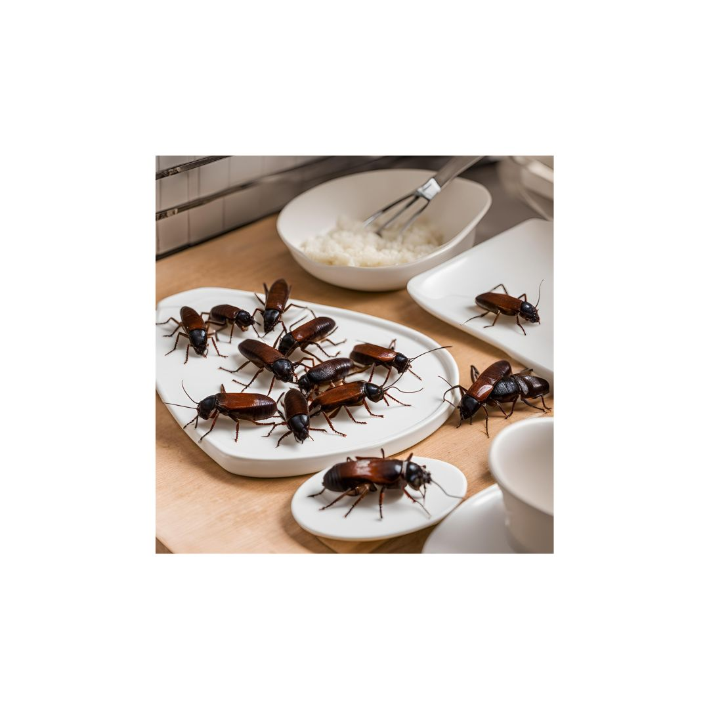

Welcome to Welsh Town And Country Pest Services!
We provide expert pest control services across Neath, focusing on effective solutions tailored to your needs. Our team understands that pest issues can arise at any time, causing stress and disruption to your daily life. We’re committed to delivering prompt, reliable services for all your pest control needs in Neath. With years of experience and a deep understanding of local pests, we ensure that our methods are safe and effective. Trust us to protect your home and business from unwanted pests, allowing you to enjoy peace of mind.
Wasp Nest Removal

Wasp nests can pose a significant threat to your safety, especially if you have allergies or children. Our Wasp Nest Removal service offers a quick and efficient solution to eliminate these pests. We use industry-standard methods to safely remove wasp nests without endangering you or your property. Our trained technicians are equipped with the right tools and protective gear to handle wasp removals. After the nest is removed, we will provide advice on preventing future infestations, ensuring your home remains safe and comfortable.
Rodent Control
Rodents like rats and mice can cause serious damage to your property and pose health risks through contamination. Our Rodent Control service is designed to effectively manage and eliminate these pests. We conduct a thorough inspection of your premises to identify entry points and nesting areas. Our team uses a combination of trapping, baiting, and exclusion techniques to ensure a comprehensive solution. We also provide guidance on preventative measures to keep your home rodent-free, including sanitation tips and sealing entry points.
Mole Catching

Moles can wreak havoc on your garden and lawn, creating unsightly mounds and tunnels. Our Mole Catching service offers professional trapping and removal to protect your outdoor spaces. We use humane methods to capture moles effectively while minimizing disruption to your garden. Our experienced technicians understand mole behavior and habitat, allowing us to target problem areas efficiently. After removing moles, we provide advice on maintaining your landscape to deter future infestations, ensuring your garden remains beautiful and intact.
Insect Control
Insects can be more than just a nuisance; they can pose serious health risks and damage your property. Our Insect Control services address a wide range of pest problems, including ants, cockroaches, and bed bugs. We conduct a detailed inspection to identify the type of insect and the extent of the infestation. Based on our findings, we develop a targeted treatment plan using safe and effective methods. Our goal is to eliminate the pests quickly while ensuring the safety of your family and pets.
Pest Management
Effective pest control goes beyond immediate treatment; it requires a strategic approach to prevent future issues. Our Pest Management services focus on long-term strategies to keep pests at bay. We begin with a comprehensive assessment of your property to identify potential risks and vulnerabilities. Our team will develop a customized pest management plan that includes regular inspections, monitoring, and maintenance treatments. We also provide ongoing support and advice to ensure your home remains pest-free, giving you peace of mind.